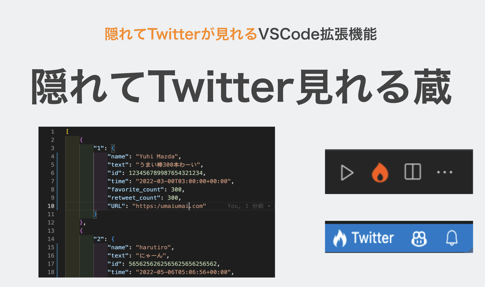
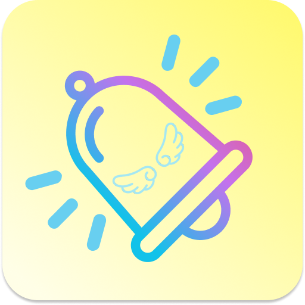

製作物一覧
TrainAlert「トレアラ」～電車乗り過ごし防止アプリ～
もう寝過ごさない、降りる駅に近づくと自動的にアラートを出すアプリ
View Project →
XClothes ～すれ違ったタイミングで服を評価するサービス～
すれ違い通信を持ちて周りの人からファッションをチェックしてもらうシステムの構築を行う
View Project →
「Clips」～新しいカタチのお気に入り保存アプリ～
簡単になおかつわかりやすく保存をするアプリ
View Project →
「Clips」～新しいカタチのお気に入り保存アプリ～
技育キャンプvol.5にて開発した、「隠れてTwitter見れる蔵」をパワーアップして登壇しました
View Project →
SIW 〜System Infomation Web〜
ちょっと便利になるWebサイトやアプリを共有するサイト
View Project →
在庫管理お知らせアプリ
在庫の管理を簡略化し、在庫のカウントをしなくてもアプリの操作をするだけで自動で過去の全体平均使用期間を計算し、次の必要な使用時期に達した当日に「お知らせ」してくれます。
View Project →